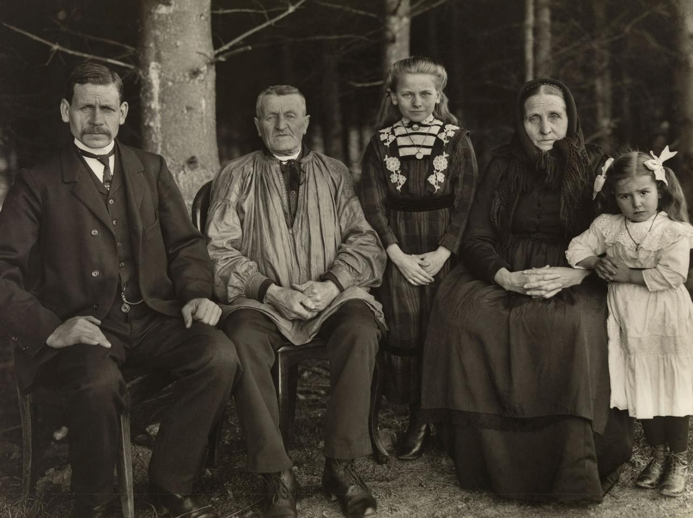
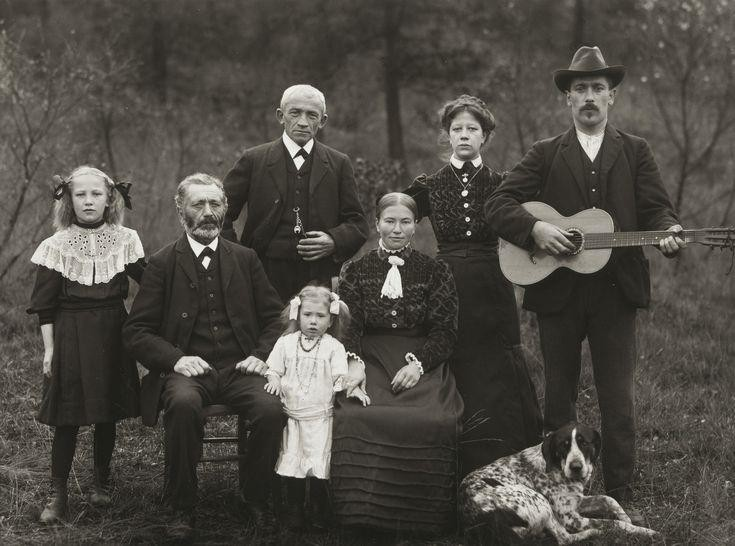

O sobrenome 'Sander' é um sobrenome popular com uma rica história e signifcado em várias culturas ao redor
do mundo. Acredita-se que tenha se originado como sobrenome patronímico, baseado no nome do pai do
indivíduo. É derivado do nome pessoal germânico 'Alexander', que signifca 'defensor do povo'.
Imagens da 1° famíla Sander no Brasil


Curiosidades
Variações: No Brasil, o sobrenome pode ser encontrado como 'Sandro' ou
'Sanderson' para se adaptar à pronúncia e ao dialeto local
Presença Geográfica: Embora de origem germânica, o sobrenome Sander é
bastante difundido, com uma presença notável na Alemanha, Estados Unidos e
Brasil
História no Brasil: A família Sander chegou ao Brasil em 1829, estabelecendo-se
em São Leopoldo, Rio Grande do Sul, após uma viagem desafiadora que incluiu
um naufrágio no Canal da Mancha
Toponímico: Em alguns casos, o sobrenome Sander pode ter origem
toponímica, referindo-se a alguém que vivia em solo arenoso (do alemão 'Sand'
que significa areia)